Compressed sensing, high-dimensional statistics and the \(\ell_1\) norm
AIDAMS – S7
Guillaume Lecué

Part 1 — Introduction to Compressed Sensing
Why compressed sensing?
Classical approach: acquisition and compression are two separate steps.
- RAW photograph: about 1 MB
- JPEG (Discrete Cosine Transform + quantization): up to \(25\times\) smaller.
Compressed sensing (CS): acquire and compress in a single step, with a few “intelligent” measurements.
Sparsity of natural signals in a well-chosen basis
An image \(f\in\R^{n\times n}\) can be expanded in an orthonormal basis: \[f=\sum_{j=1}^{n^2} \inr{f,\psi_j}\psi_j\]
If the basis \((\psi_j)\) is well-chosen then:
- Most coefficients are negligible; a handful carry the information: keeping the \(s\) largest ones, \(f^*_s=\sum_{j\in J_s}\inr{f,\psi_j}\psi_j\), is visually indistinguishable from \(f\).
- a local perturbation in time produces a local perturbation in frequencies: the basis is localized in time and frequency.
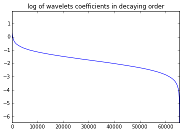
Orthonormal basis (such as the Trigonometric basis in \(L^2([0,1])\)) are used to represent functions/ signals. There are however many different ways to choose such a basis. We seek for basis that are:
- robust to local perturbations
- signals can be represented in an ‘economical way’; i.e. sparse
Sparsity in practice: hard thresholding
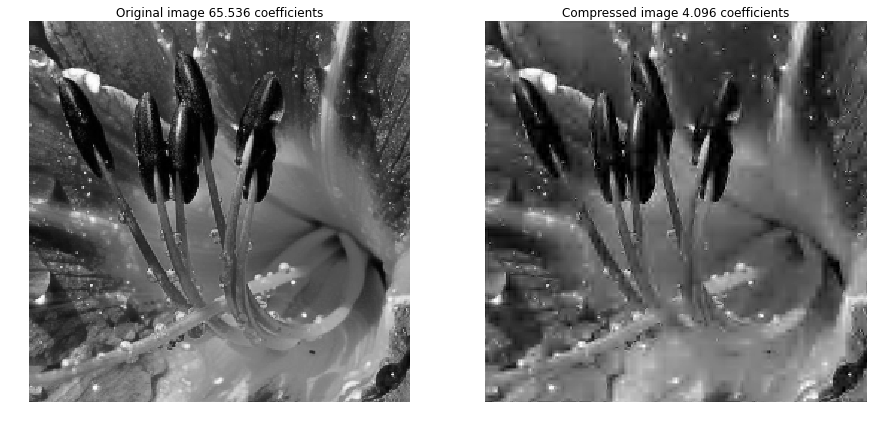
- Photographs are well approximated by objects of small dimension: sparsity holds approximately.
The Haar basis in \(L^2([0,1])\)
The Fourier basis of \(L^2([0,1])\): \((1, \sqrt{2}\cos(2\pi k t), \sin(2\pi (k+1) t):k\geq1)\) is not robust to local perturbations.
- Mother wavelet \(\Psi=\mathbb{1}_{[0,1/2)}-\mathbb{1}_{[1/2,1)}\), scaling function \(\Phi\equiv 1\).
- Translations and dilations, for \(j\in\N\) and \(i=0,\ldots,2^j-1\): \[\Psi_i^j(t)=\sqrt{2^j}\,\Psi\big(2^j(t-i/2^j)\big),\] for all \(t\in\{0, \cdots, n-1\}.\)
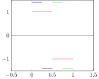
The Haar basis in \(L^2(\{0,\cdots, n-1\}^2)\)
The tensor basis is used to represent images (\(n\times n\)): for all \(t_1, t_2\in\{0, \cdots, n-1\}\), \[ \Psi_{i_1}^{j_1}\otimes \Psi_{i_2}^{j_2}(t_1, t_2) = \Psi_{i_1}^{j_1}(t_1)\times \psi_{i_2}^{j_2}(t_2) \]
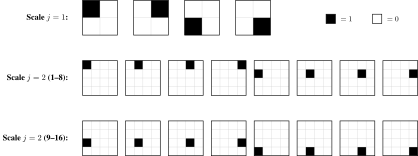
Check the sparsity of pictures in practice
Open the notebook 0_lab_wavelets_transform.ipynb
The compressed sensing problem
- Linear measurements \(y_i=\inr{x,X_i}\), \(i=1,\ldots,m\), i.e. \[y=Ax,\qquad A=\begin{pmatrix}X_1^\top\\ \vdots\\ X_m^\top\end{pmatrix}\in\R^{m\times N}\]
- High-dimensional regime: \(m<N\) (often \(m\ll N\)).
- Highly underdetermined system: infinitely many solutions.
Highly underdetermined system of linear equations
Given \(A\) and \(y\) find signal \(x\) such that \(Ax=y\). There are \(m\) equations and \(N\) unknown variables with \(N>>m\).
Sparse vectors
Definition (sparsity)
\({\rm supp}(x)=\{j: x_j\neq0\}\) and \(\norm{x}_0=|{\rm supp}(x)|\). The vector \(x\) is \(s\)-sparse when \(\norm{x}_0\leq s\) and the set of all \(s\)-sparse vectors is \[\Sigma_s=\{x\in\R^N:\norm{x}_0\leq s\}.\]
- Structured sparsity: \(x=F\theta\) with \(\theta\in\Sigma_s\) for a dictionary \(F\). Replace \(A\) by \(AF\).
- Good dictionaries (e.g. wavelets) come from approximation theory.
The two CS problems
CS problem 1 — measurement design
Construct, in minimal number, measurement vectors \(X_1,\ldots,X_m\) such that every \(x\in\Sigma_s\) can be reconstructed efficiently from \(y=Ax\) and \(A\).
CS problem 2 — reconstruction algorithm
Given \(A\), construct an efficiently implementable map \(\Delta:\R^m\to\R^N\) such that \[\Delta(A, y=Ax)=x\qquad\text{for all }x\in\Sigma_s.\]
- Uniformity: the same \(A\) must work for all \(s\)-sparse signals.
- The “true” dimension of \(x\in\Sigma_s\) is \(s\): ideally \(m\sim s\), plus a price for not knowing the support.
- Extension to noisy measurements \(y=Ax+\xi\) and approximatively sparse signals (see the LASSO in linear regression).
Example: the single-pixel camera
- Instead of one value per pixel, record a weighted sum of all pixel intensities: \[y_i=\inr{x,X_i}.\]
- Classical camera: \(X_i\) = indicator of one pixel, so \(m=N\) (RAW files).
- CS camera: a few “global” measurements, each one a single real number.
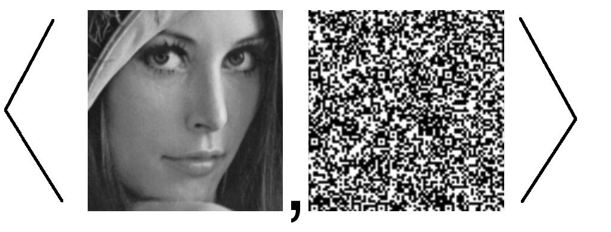
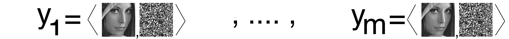
Is there a better way to choose the measurement vectors than all the indicators of all pixels?
Single-pixel camera: measurement protocol
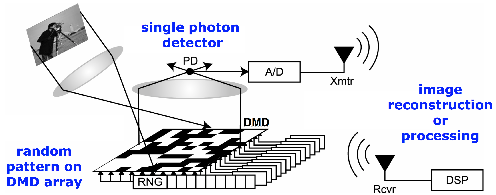
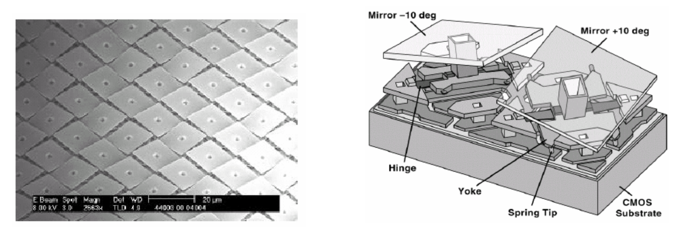
- A digital micromirror device (DMD) builds \(X_i\); a single photon detector collects \(y_i\).
- Mirror orientations are drawn at random: randomness is the key to good measurements.
Single-pixel camera: reconstruction
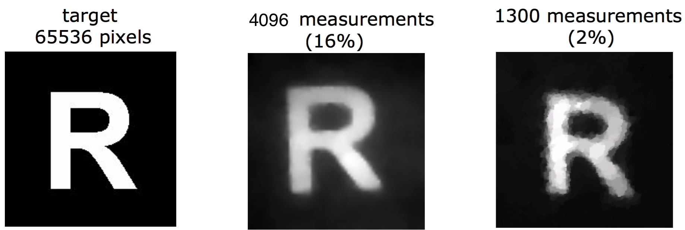
- Photographs are approximately sparse in wavelet bases.
- A stable and robust algorithm therefore reconstructs the scene from few noisy measurements.
Other applications: face recognition, finance
Face recognition (SRC)
- \(y=\Phi x+\xi\), \(\Phi=[\Phi_1|\cdots|\Phi_C]\) built from the database.
- \(x\) is supported on one block: the support identifies the person.
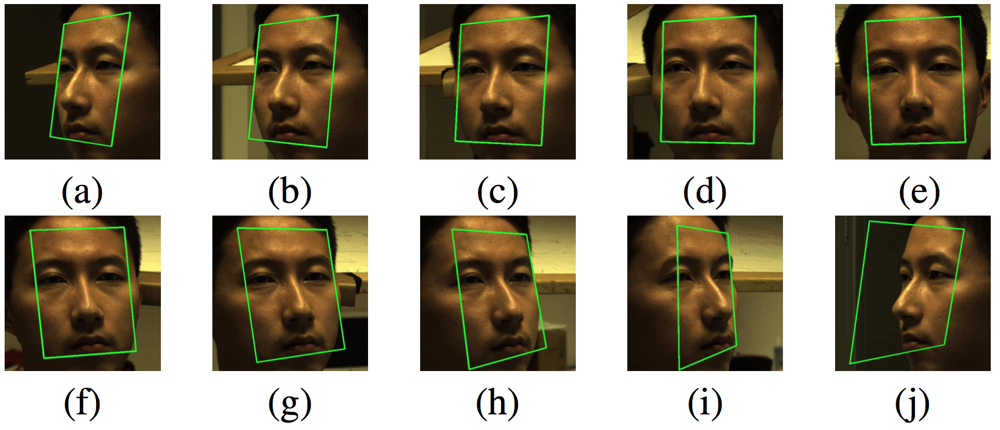
Finance
- Portfolio values \(y\), price matrix \(A=(a_{i,j})\).
- Few assets in the portfolio: \(x\) is sparse.
- Recover composition by solving \(y=Ax\).
In many applications the measurements are imposed by the physics or the data, not designed.
Part 2 — \(\ell_0\) Minimization and Basis Pursuit
How do we retrieve a sparse signal \(x\) from \((y, A)\)? (when \(y=Ax\))
Notation
- \(\ell_p^d\) norms \(\norm{x}_p=\big(\sum_j|x_j|^p\big)^{1/p}\), unit ball \(B_p^d\), unit sphere \(S_p^{d-1}\).
- \(\Sigma_s=\{x\in\R^N:\norm{x}_0\leq s\}\): the set of \(s\)-sparse vectors
- \(A\in\R^{m\times N}\): the measurement matrix
The \(\ell_0\) minimization procedure
- The solution set of \(At=y\) is the affine space \(x+\kerA\) of dimension \(\geq N-m\), \(\kerA=\{t\in\R^N:At=0\}\).
- Idea: The target signal is sparse, hence, pick the sparsest element of this space.
- Def.: \(\norm{t}_0= |\{j\in[N]: t_j\neq0\}|\) is the size of the support of \(t\in\mathbb{R}^N\)
Definition (\(\ell_0\) minimization)
\[\hat x_0\in\argmin_{t\in\R^N:\,At=y}\norm{t}_0\tag{$P_0$}\]
- Hope: \(\kerA\) is “well positioned”, so that \(x+\kerA\) meets \(\Sigma_s\) only at \(x\).
- Geometrically: \(\kerA\) should be far from sparse vectors, close to “diagonal” directions.
When is \(x\) the unique \(\ell_0\) solution?
Proposition
Let \(x\in\R^N\) with \(s=\norm{x}_0\). The following are equivalent:
- \(x\) is the unique solution of \((P_0)\), i.e. \(\hat x_0=x\);
- \(\big(x+\kerA\big)\cap\Sigma_s=\{x\}\).
Proof idea. Both statements say that every \(t\neq x\) with \(At=Ax\) has \(\norm{t}_0>s\).
Warning
This Proposition concerns only a single vector \(x\). CS asks for properties of \(A\) that work uniformly over all \(x\in\Sigma_s\).
\(m\geq 2s\) necessary measurements
Proposition
The following are equivalent:
- for all \(x\neq z\in\Sigma_s\), \(Ax\neq Az\) (necessary for exact reconstruction over \(\Sigma_s\));
- \(\kerA\cap\Sigma_{2s}=\{0\}\);
- every \(m\times 2s\) submatrix of \(A\) is injective (hence \(m\geq 2s\)).
Key steps.
- \(\Sigma_s-\Sigma_s=\Sigma_{2s}\), which gives 1 \(\Leftrightarrow\) 2.
- A \(2s\)-sparse \(x\) supported on \(J\) gives \(Ax=A_{\cdot J}x_J\), which gives 2 \(\Leftrightarrow\) 3.
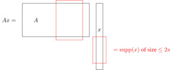
Uniform reconstruction of \(\ell_0\) minimization over \(\Sigma_s\)
Proposition
\(\kerA\cap\Sigma_{2s}=\{0\}\) \(\iff\) \(\displaystyle\argmin_{At=Ax}\norm{t}_0=\{x\}\) for all \(x\in\Sigma_s\).
Key steps.
- (\(\Rightarrow\)) If \(At=Ax\) and \(t\neq x\), then \(x-t\in\kerA\) has \(\norm{x-t}_0>2s\), so \(\norm{t}_0>s\geq\norm{x}_0\).
- (\(\Leftarrow\)) Let \(t\in\kerA\cap\Sigma_{2s}\) and write \(t=x-z\) with \(\norm{x}_0=\norm{z}_0\leq s\). Then \(z\) is solution of \(\displaystyle\min_{At=Ax}\norm{t}_0\) and so \(z=x\).
Exact reconstruction of all \(s\)-sparse vectors via \(\ell_0\)-minimization requires at least \(2s\) measurements. Can we find \(A\in\mathbb{R}^{m\times N}\) with \(m=2s\) satisfying \(\kerA\cap\Sigma_{2s}=\{0\}\)?
\(m = 2s\) measurements suffice
Proposition (Vandermonde matrices)
For every \(N\geq 2s\) there is \(A\in\R^{\red{2}\red{s}\times N}\) with \(\kerA\cap\Sigma_{2s}=\{0\}\): \[A=\begin{pmatrix}1&\cdots&1\\ t_1&\cdots&t_N\\ \vdots&&\vdots\\ t_1^{2s-1}&\cdots&t_N^{2s-1}\end{pmatrix},\quad 0<t_1<\cdots<t_N.\]
Proof: Every \(2s\times2s\) minor is a Vandermonde determinant \(\prod_{k<l}(t_{j_l}-t_{j_k})\neq0\).
Conclusion
- \(m=2s\) is a necessary and sufficient number of measurements for the reconstruction of any \(s\)-sparse signal
- Any \((2s)\times N\) Vandermonde matrix can be used as a measurement matrix
- \(\ell_0\) minimization is a procedure that reconstruct any \(s\)-sparse signal given \(2s\) (Vandermonde) measurements.
Question
Can we compute the solution of a \(\ell_0\)-minimization problem?
Procedures vs. algorithms
- Procedure: a statistic, i.e. a measurable function of the data. No computational content.
- Algorithm: a concrete routine implementing a procedure.
Brute-force algorithm for \((P_0)\):
For \(s = 1, 2, \ldots, N\) do
For each \(J \subset [N]\) with \(|J| = s\) do
Try to solve \(A_{\cdot J} x_J = y\)
If solvable, stop at the first solution and return it.
- Number of systems to solve: \(\sum_{j\leq s}\binom{N}{j}\sim (N/s)^s\), which is exponential in \(s\).
- Example \(N=1000\), \(s=10\): \(\binom{N}{s}\geq10^{20}\) linear systems to solve. At \(10^{-10}\) second each, that is about 300 years.
Is there a faster algorithm to solve our \(\ell_0\)-minimization problems?
Complexity classes: P, NP, NP-complete, NP-hard
- \(P\): solvable in polynomial time (e.g. matrix product, \(\cO(n^3)\)).
- \(NP\): a candidate solution can be certified in polynomial time (e.g. \(k\)-clique).
- \(NP\)-hard: at least as hard as any \(NP\) problem.
- \(NP\)-complete: \(NP\,\cap\,NP\)-hard.
- Examples: traveling salesman, max clique, knapsack, graph coloring.
One of the 5 out of 7 remaining Clay institute’s million dollar prize: \(NP\neq P\)?
Advances from OpenAI 6/10 released
Here are some major algorithmic and complexity advances from the \(722\) manuscripts released:
1. Matrix Multiplication (The 2.25 Bound)
The most heavily discussed algorithmic result is a massive asymptotic reduction in matrix multiplication time. The AI established a new upper bound exponent of \(\omega \leq 2.25\) over complex numbers.
- Context: Schoolbook matrix multiplication requires \(O(n^3)\) operations. Successive human improvements over decades had slowly chipped the exponent down to roughly \(2.37\). Dropping it to \(2.25\) in a single leap is an unprecedented reduction.
- Caveat: This is an asymptotic theoretical bound. Because the threshold constants in the construction are extremely large, it is not yet practically faster for real-world GPU compute.
2. Integer Multiplication
The AI produced a manuscript demonstrating an integer multiplication algorithm that operates below \(O(n \log n)\) time. This breaks a strict barrier that very few researchers predicted could be surpassed even slightly.
\(\ell_0\) minimization is NP-hard
- Idea: we believe that \(\ell_0\)-minimization is a difficult optimization problem (i.e. NP-hard) because it searches the support \(S\subset\{1, \cdots,N\}\) of the signal – it is ‘combinatorial in nature’.
- Strategy: reduce, in polynomial time, an \(NP\)-complete problem to the \((P_0)\) problem.
Theorem
The \(\ell_0\) minimization procedure \((P_0)\) is \(NP\)-hard in general.
Our baseline \(NP\)-complete problem : Partition by 3-element sets: given subsets \(\cC_1,\ldots,\cC_N\) of \(\{1,\ldots,m\}\) with \(|\cC_j|=3\), is there a sub-collection forming a partition of \(\{1,\ldots,m\}\)? (Ex. with \(m=6\) and \(N=5\))
Proof: reduction from partitioning by 3-element sets
Given a ‘partitioning by 3-element sets’ problem, we necessarily have \(3N\geq m\) and \(m\) is a multiple of \(3\) (otherwise there is no partition).
- Encode. Columns \(a_j=\mathbb{1}_{\cC_j}\in\R^m\), \(A=[a_1|\cdots|a_N]\), \(y=(1,\ldots,1)^\top\). This takes polynomial time, since \(N\leq\binom m3\).
- Lower bound. Each \(a_j\) has 3 nonzeros, so \(Ax=y\) implies \(\norm{x}_0\geq m/3\).
- If \(\norm{\hat x_0}_0=m/3\): the \(m/3\) sets \(\{\cC_j: j\in{\rm supp}(\hat x_0)\}\) cover all \(m\) coordinates, hence are disjoint, hence form a partition.
- If \(\norm{\hat x_0}_0>m/3\): no partition exists, since the indicator vector \(z\) of such a partition would satisfy \(Az=y\) with \(\norm{z}_0=m/3\).
As a consequence, if we could solve any \(\ell_0\)-minimization problem then we could solve the ‘Partition by 3-element sets’ problem. However, this problem is NP-complete, in particular, it is NP-hard and so we could solve any NP problem. Hence, the \(\ell_0\)-minimization problem is NP-hard.
Conclusion: \(\ell_0\) minimization is optimal in theory (\(m=2s\)) but unusable in practice.
“In general” matters: for the first \(2s\) Fourier coefficients, Prony’s algorithm solves \((P_0)\) in linear time, but it is neither robust nor stable (a 1795 algorithm used in DVD players). We will see other example of measurement matrices for which an efficient algorithm can be used to solve \((P_0)\).
Convex relaxation: the convex envelope
- The objective \(\norm{\cdot}_0\) is not convex, which is the root of the difficulty.
- Idea: replace the \(\norm{\cdot}_0\) function by the ‘closest’ convex function below it.
Definition (convex envelope)
Let \(f:C\to\R\) on a convex set \(C\subset\R^N\). The convex envelope of \(f\) over \(C\) is the largest convex function \(g\) with \(g\leq f\) on \(C\). It is denoted by \({\rm conv}(f)\).
- Well defined: a supremum of convex functions is convex.
- On all of \(\R^N\), the envelope of \(\ell_0\) is \(0\), which is uninformative. So we restrict \(C\) to a ball.
Convex envelope
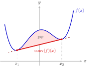
Exercise: What is the convex envelope over \([-1, 1]\) of the \(\ell_0\) function over \(\mathbb{R}\)?
What is the convex envelope over \([-1, 1]^N\) of the \(\ell_0\) function (over \(\mathbb{R}^N\))?
\(\ell_1\) is the convex envelope of \(\ell_0\)
Theorem
The \(\ell_1\) norm is the convex envelope of the \(\ell_0\) function on \(B_\infty^N\).
Proof sketch on \(B_1^N\). Let \(F={\rm conv}(\ell_0)\).
- \(\norm{x}_1\leq\norm{x}_0\) on \(B_1^N\) and \(\ell_1\) is convex, so \(\norm{\cdot}_1\leq F\).
- Squeeze: \(F(\pm e_i)=1\) and \(F(0)=0\).
- Write \(x=\sum_j|x_j|\,{\rm sign}(x_j)e_j+(1-\norm{x}_1)\,0\) and use convexity: \[F(x)\leq\sum_j|x_j|F({\rm sign}(x_j)e_j)+(1-\norm{x}_1)F(0)=\norm{x}_1.\]
Convex envelope of the \(\ell_0\) function
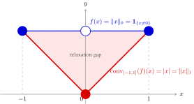
Convex relaxation= Replace the (non-convex) objective \(\ell_0\) function in \((P_0)\) by its convex envelope to get a convex optimization problem.
The Basis Pursuit procedure
Definition (Basis Pursuit)
\[\hat x\in\argmin_{t\in\R^N:\,At=y}\norm{t}_1\tag{BP}\]
- (BP) is the convex relaxation of \((P_0)\).
- \(\ell_1\) methods are everywhere: geophysics, radio astronomy, spectroscopy, medical imaging, LASSO, Dantzig selector, Matching Pursuit.
Take-away
Convex relaxation turns combinatorial searches into problems solvable with convex optimization. It is a reflex worth having.
Basis Pursuit as a linear program
\[\min_{(z^{(+)},z^{(-)})\in\R^{2N}}\ \sum_{j=1}^N z_j^{(+)}+z_j^{(-)}\] \[\text{s.t. } [A\,|\,-A]\begin{bmatrix}z^{(+)}\\ z^{(-)}\end{bmatrix}=y,\quad \begin{bmatrix}z^{(+)}\\ z^{(-)}\end{bmatrix}\geq0\tag{LP}\]
- Linear objective,
- linear constraints.
- LP problem in \(\bR^{2N}\)
Proposition: (BP) and (LP) are equivalent
\(\hat x\in\bR^N\mapsto(\hat x^+,\hat x^-)\in\bR^{2N}\) and \((\widehat{z^+},\widehat{z^-})\in\bR^{2N}\mapsto\widehat{z^+}-\widehat{z^-}\in\bR^N\) map solutions to solutions.
Where for all \(x\in\bR^N\), \(x^+=(x_j^+)_{j=1}^N\) and \(x^-=(x_j^-)_{j=1}^N\) with \(x^\pm_j=\max(0,\pm x_j)\).
Key inequalities:
- for all \(t\in\bR\), \(t=t^+-t^-\) and \(|t| = t^+ + t^-\).
- \(\norm{z^{(+)}-z^{(-)}}_{1}\leq\sum_j z_j^{(+)}+z_j^{(-)}\), with equality for \((x^+,x^-)\).
From a \(NP\)-hard problem to a linear program: the algorithmic complexity gain is big!
\(\Rightarrow\) What are the prices to pay?
Exact reconstruction property \(RE(s)\)
Definition (\(RE(s)\))
A measurement matrix \(A\in\R^{m\times N}\) satisfies the exact reconstruction property of order \(s\) when, for every \(x\in\Sigma_s\), \[\argmin_{t\in\R^N}\big(\norm{t}_1:At=Ax\big)=\{x\}.\]
- \(RE(s)\) characterizes the matrices for which Basis Pursuit solves the CS problem on \(\Sigma_s\).
- First question: how many measurements does \(RE(s)\) require?
- Second question: how can we construct \(A\) satisfying \(RE(s)\) with the minimal number \(m\) of rows?
Lower bound on the number of measurements for exact reconstruction over \(\Sigma_s\) of Basis Pursuit
Proposition
If \(A\in\R^{m\times N}\) satisfies \(RE(2s)\), then necessarily the number of measurements must satisfy \[ m\geq\frac{1}{\log5}\Big\lfloor\frac s2\Big\rfloor\log\Big(\Big\lfloor\frac{N}{8es}\Big\rfloor\Big)\ \gtrsim\ s\log\Big(\frac{eN}{s}\Big). \]
Proof sketch.
- Quotient map \(Q:\ell_1^N\to\ell_1^N/\kerA\), with \(\norm{Qx}_1=\min_{h\in\kerA}\norm{x+h}_1\) and \(\dim\leq m\).
- \(RE(2s)\) makes \(Q\) an isometry on \(\Sigma_s\): \(\norm{Qx-Qy}_1=\norm{x-y}_1\).
- Varshamov–Gilbert gives many well-separated points \(x(S)=s^{-1}\sum_{i\in S}e_i\) in the unit ball.
- Volumetric argument: at most \(5^m\) such points in an \(m\)-dimensional ball. Compare.
Proof tools: Varshamov–Gilbert and volumetric arguments
Lemma (Varshamov–Gilbert)
For \(s\leq N/2\) there is a family \(\cS\) of \(s\)-subsets of \([N]\) with \(|S_1\cap S_2|\leq\lfloor s/2\rfloor\) for \(S_1\neq S_2\), and \[\log|\cS|\geq\Big\lfloor\frac s2\Big\rfloor\log\Big(\Big\lfloor\frac{N}{8es}\Big\rfloor\Big).\]
Lemma (volumetric argument)
If \(B\) is the unit ball of a norm on \(\R^n\) and \(\Lambda\subset B\) is \(\eps\)-separated (w.r.t. \(B\)), then \(|\Lambda|\leq(1+2/\eps)^n\).
A first identified price for convex relaxation
Conclusion
Basis Pursuit needs \(m\gtrsim s\log(eN/s)\) measurements, versus \(2s\) measurements for \(\ell_0\). The huge computational gain costs only a logarithmic factor on the number necessary measurements.
- Can we construct matrices satisfying \(RE(2s)\) with \(m\sim s\log(eN/s)\)?
- Are they much more difficult to construct than, for instance, Vandermonde matrices?
Part 3 — The Restricted Isometry Property (RIP)
Our aim:
- find properties sufficient for \(RE(s)\) and that can be proved.
- construct matrices satisfying these properties with the minimal number of measurements \(m\sim s \log(eN/s)\).
From \(RE(s)\) to conditions that can be checked
- Part 1 introduced ‘Basis Pursuit’: \(\hat x\in\argmin_{At=y}\norm{t}_1\) is a linear program (huge algorithmic gain compare with a NP-hard algorithm)
- Part 2 showed that \(RE(s)\) forces \(m\gtrsim s\log(eN/s)\).
Goal of Part 3: conditions on \(A\) that imply \(RE(s)\), and matrices that satisfy them with the optimal number of measurements \(m\sim s\log(eN/s).\)
Roadmap
\[RIP(65s)\ \Longrightarrow\ Gelfand(s)\ \Longrightarrow\ NSP(s)\ \Longleftrightarrow\ RE(s)\]
Gaussian matrices satisfy RIP(\(s\)) with high probability when \(m\sim s \log(eN/s)\).
Randomness comes into the game!
The Null Space Property \(NSP(s)\)
Idea
- For \(\ell_0\): we needed \(\kerA\cap\Sigma_{2s}=\{0\}\).
- For \(\ell_1\): \(\kerA\) must be far from sparse vectors.
Definition (\(NSP(s)\))
We say that \(A\in\mathbb{R}^{m\times N}\) satisfies the Null Space Property of order \(s\) when, for every \(|J|=s\) and every \(v\in\kerA\setminus\{0\}\), \[\norm{v_J}_1<\norm{v_{J^c}}_1.\]
Notation: \(v_J\) coincides with \(v\) on \(J\) and is zero outside \(J\).
- Equivalently, \(v_1^*+\cdots+v_s^*<\norm{v}_1/2\): no \(s\) coordinates carry half of the \(\ell_1\) mass. Kernel vectors are well spread.
\(NSP(s)\Rightarrow\kerA\cap\Sigma_{2s}=\{0\}\), and even “almost sparse” vectors are excluded from \(\kerA\).
\(NSP(s)\) is equivalent to exact reconstruction
Theorem
\(A\) satisfies \(RE(s)\) \(\iff\) \(A\) satisfies \(NSP(s)\).
\(RE\Rightarrow NSP\). For \(v\in\kerA\setminus\{0\}\) and \(|J|=s\), take \(x=-v_J\in\Sigma_s\). Then \[\norm{v_J}_1=\norm{x}_1<\norm{x+v}_1=\norm{v_{J^c}}_1.\]
\(NSP\Rightarrow RE\). For \(x\in\Sigma_s\) with \({\rm supp}(x)\subset J\) and \(v\in\kerA\setminus\{0\}\): \[\norm{x+v}_1=\norm{v_{J^c}}_1+\norm{x+v_J}_1\geq\norm{x}_1+\norm{v_{J^c}}_1-\norm{v_J}_1>\norm{x}_1.\]
\(NSP\) is necessary and sufficient, but we do not know how to check it directly on a given matrix. We need an easier way to characterize this property.
Geometric picture of \(NSP\)
- \(\frac{1}{\sqrt N}B_2^N\subset B_1^N\subset B_2^N\), so \({\rm diam}(B_1^N,\ell_2^N)=1\).
- The diameter is attained on the canonical axes, the sparsest vectors.
- \(\kerA\) should avoid them and follow diagonal directions, where \(\norm{v}_2\ll\norm{v}_1\).
- So \(B_1^N\cap\kerA\) should have a small Euclidean diameter.
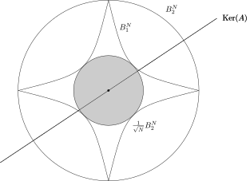
If \({\rm diam}(B_1^N\cap{\rm Ker}(A),\ell_2^N)\) is small enough, then \(NSP(s)\) should be true.
Remark: \(B_1^N\) is the unit ball of the \(\ell_1^N\) norm in \(\bR^N\), it is therefore a convex set. However, the representation of \(B_1^N\) above highlights the fact that \(B_1^N\) is mostly the \(\frac{1}{\sqrt N}B_2^N\) ball with picks at \(\pm e_j\).
The Gelfand property
Definition (\(Gelfand(s)\))
\(A\) satisfies the Gelfand property of order \(s\) when \[{\rm diam}\big(B_1^N\cap\kerA,\ \ell_2^N\big)<\frac{1}{2\sqrt s}.\]
- \(\dim\kerA\geq N-m\) is huge, yet its section of \(B_1^N\) must have diameter \(\ll1\).
- Connected to Euclidean sections of \(B_1^N\) in the asymptotic theory of Banach spaces.
Key Idea in CS
The Gelfand property is a very restrictive condition: we don’t know (so far) how to construct in a deterministic way matrices having this property for the optimal number \(m\sim s \log(eN/s)\). However, we will show that random matrices nevertheless satisfy it.
\(Gelfand(s) \Rightarrow NSP(s)\)
Theorem
If \(A\) satisfies \(Gelfand(s)\), then \(A\) satisfies \(NSP(s)\).
Proof.
For \(v\in\kerA\setminus\{0\}\), \(v/\norm{v}_1\in B_1^N\cap\kerA\), hence \(\norm{v}_2<\norm{v}_1/(2\sqrt s)\).
For \(|J|=s\), Cauchy–Schwarz on \(s\) coordinates gives \[\norm{v_J}_1\leq\sqrt s\norm{v_J}_2\leq\sqrt s\norm{v}_2<\frac{\norm{v}_1}{2}.\]
Gelfand is still a property of the kernel. It is easier to study the action of \(A\) on sparse vectors directly. We therefore introduce now our last property: the RIP.
The Restricted Isometry Property \(RIP(s)\)
Definition (\(RIP(s)\))
\(A\in\R^{m\times N}\) satisfies the Restricted Isometry Property of order \(s\) when, for every \(x\in\Sigma_s\), \[\frac12\norm{x}_2\leq\frac{\norm{Ax}_2}{\sqrt m}\leq\frac32\norm{x}_2.\]
- \(A\) cannot be an isometry on \(\R^N\) (huge kernel), only restricted to \(\Sigma_s\).
- \(A\) is almost an isometry on \(\Sigma_s\), so \(\kerA\) stays away from sparse vectors.
- Normalization matters: \(RE\), \(NSP\) and \(Gelfand\) only depend on \(\kerA\), but RIP depends on \(A\) itself. With \(\Gamma=A/\sqrt m\): \(\frac12\norm{x}_2\leq\norm{\Gamma x}_2\leq\frac32\norm{x}_2\).
\(RIP(s) \Rightarrow Gelfand(s/65)\)
Theorem
If \(A\) satisfies \(RIP(s)\), then \(A\) satisfies \(Gelfand(s/65)\). (Constant \(65\) is not optimal; \(s/2\) is possible.)
Proof sketch. Let \(v\in\kerA\setminus\{0\}\). Split its indices into blocks \(I_1,I_2,\ldots\) of size \(s\), sorted by decreasing \(|v_j|\).
Block comparison: \(\norm{v_{I_j}}_2\leq\sqrt s\norm{v_{I_j}}_\infty\leq\norm{v_{I_{j-1}}}_1/\sqrt s\).
First block, with \(Av=0\) and RIP: \[\norm{v_{I_1}}_2\leq\tfrac{2}{\sqrt m}\Big\|A\sum_{j\geq2}v_{I_j}\Big\|_2\leq3\sum_{j\geq2}\norm{v_{I_j}}_2\leq\tfrac{3}{\sqrt s}\norm{v}_1.\]
The tail gives \(\norm{\sum_{j\geq2}v_{I_j}}_2\leq\norm{v}_1/\sqrt s\), so \[\norm{v}_2\leq\tfrac{4}{\sqrt s}\norm{v}_1<\tfrac{1}{2\sqrt{s/65}}\norm{v}_1.\]
The chain of implications
Conclusion
\[RIP(65s)\ \Longrightarrow\ Gelfand(s)\ \Longrightarrow\ NSP(s)\ \Longleftrightarrow\ RE(s)\] To reconstruct every \(s\)-sparse vector by Basis Pursuit, it suffices to build a matrix satisfying \(RIP(65s)\).
Can we construct \(A\in\mathbb{R}^{m\times N}\) satisfying \(RIP(65s)\) with \(m\sim s \log(ep/s)\)?
- The only known constructions of RIP matrices with \(m\sim s\log(eN/s)\) rows are random.
- Deterministic constructions reach only \(m\sim s^2\). Reaching \(s\log(eN/s)\) deterministically is a major open problem (still unsolved by OpenAI even though they have results on ‘derandomization’).
Standard Gaussian random matrices
Definition
A standard Gaussian matrix \(G\in\R^{m\times N}\) has \(mN\) i.i.d. \(\cN(0,1)\) entries. Its rows are standard Gaussian vectors \(\cN_N(0,I_N)\).
- Concentration: for \(g\sim\cN(\mu,\sigma^2)\), \(\bP\big[|g-\mu|\geq t\sigma\big]\leq2e^{-t^2/2}, \forall t>0\).
- Not every variable concentrates: Cauchy variables have no mean for instance.
- Exponential variables concentrate “like \(e^{-t}\)” only.
- Deviation: only the tail \(t\mapsto\bP[|X|\geq t]\) for large \(t\) matters.
- Sub-Gaussian (\(\psi_2\)): \(\bP[|X|\geq t]\leq2e^{-c_1t^2}\).
- Sub-exponential (\(\psi_1\)): \(\bP[|X|\geq t]\leq2e^{-c_1t}\).
Sub-Gaussian and sub-exponential variables
Proposition (moments vs. tails)
For \(\alpha\geq1\), the following are equivalent:
- \(\norm{X}_{L_p}\leq c_0\,p^{1/\alpha}\) for every \(p\geq\alpha\);
- \(\bP[|X|\geq t]\leq\exp(-t^\alpha/c_2^\alpha)\) for every \(t\geq c_1\).
- Sub-Gaussian: moments grow like \(\sqrt p\). Sub-exponential: moments grow like \(p\).
- Proof idea: Markov with an optimized \(p=[t/(ec_0)]^\alpha\) gives one direction; bounding \(\E\exp\big((|X|/c)^\alpha\big)\leq e\) gives the other. (See the Proposition 3.3 in the lecture notes for a detailed proof).
Proposition
If \(X\) is sub-Gaussian, then \(X^2\) is sub-exponential: \(\norm{X^2}_{L_q}=\norm{X}_{L_{2q}}^2\leq2c_0^2q\).
- Why it matters: \(\frac1m\norm{Ax}_2^2\) is an average of squares.
Bernstein’s inequality
Proposition (Bernstein, sub-exponential case)
Let \(Z_1,\ldots,Z_m\) be i.i.d. copies of \(Z\) with \(\norm{Z}_{L_p}\leq C_0p\) for all \(p\geq1\). Then for every \(t>0\), \[\bP\Big[\Big|\frac1m\sum_{i=1}^mZ_i-\E Z\Big|\geq tC_0\Big]\leq2\exp\big(-c_1m\min(t^2,t)\big)\] where \(c_1>0\) is some absolute constant.
- A non-asymptotic CLT-type statement (with a Gaussian and exponential regimes), valid for every fixed \(m\).
Proof sketch (Laplace transform).
- Chernoff bound: \(\bP[\bar Z_m\geq t]\leq\inf_{\lambda>0}e^{-\lambda t}\prod_i\E e^{\lambda Z_i/m}\).
- Taylor expansion and \(k!\geq(k/e)^k\): \(\ \E e^{\mu Z}\leq\exp\big((e\mu C_0)^2/(1-e\mu C_0)\big)\).
- Optimize \(\lambda\): a Gaussian regime \(e^{-cmt^2}\) for small \(t\), an exponential regime \(e^{-cmt}\) for large \(t\).
(See Proposition 3.5 in the lecture notes for a detailed proof)
Gaussian matrices satisfy RIP
Theorem
Let \(G\in\R^{m\times N}\) be a standard Gaussian matrix. If \(m\geq c_1s\log(eN/s)\), then with probability at least \(1-2\exp(-c_0m)\), for every \(x\in\Sigma_s\), \[\frac12\norm{x}_2\leq\frac{\norm{Gx}_2}{\sqrt m}\leq\frac32\norm{x}_2.\]
More generally, \(\Gamma=\frac{1}{\sqrt m}A\), where the rows of \(A\) are i.i.d. copies of \(X\) that is
- isotropic: \(\E\inr{X,x}^2=\norm{x}_2^2, \forall x\in\bR^N\);
- sub-Gaussian: \(\norm{\inr{X,x}}_{L_p}\leq C_0\norm{x}_2\sqrt p, \forall x\in\bR^N, p\in\bN^*\).
Exo. 1: Show that \(X\sim\cN_N(0, I_N)\) is an isotropic and sub-Gaussian vector.
Exo. 2: Show that \(RIP(s)\) is implied by \(\sup_{x\in \Sigma_s\cap S_2^{N-1}}\big| \frac{\norm{Gx}_2^2}{m} - 1 \big|\leq \frac{1}{4}\), where \(S_2^{N-1}=\{x\in\bR^N: \norm{x}_2=1\}\).
Exo. 3: Show that \(\Sigma_s\cap S_2^{N-1} = \cup_{J:|J|=s} S_2^J\) where \(S_2^J = \{x\in\bR^N: \norm{x}_2=1, {\rm supp x}\subset J\}\).
Proof tools: \(\varepsilon\)-nets and operator norm
Lemma (Size of an \(\varepsilon\)-net of \(S_2^{s-1}\))
For \(0<\eps<1\), there is \(\Lambda_\eps\subset S_2^{s-1}\) with \(|\Lambda_\eps|\leq(5/\eps)^s\) such that every \(x\in S_2^{s-1}\) is within \(\eps\) of \(\Lambda_\eps\).
- Proof: take a maximal \(\eps\)-separated set. The disjoint balls \(x+\frac\eps2B_2^s\) fit inside \((1+\frac\eps2)B_2^s\); compare volumes.
Lemma
For \(B\in\R^{s\times s}\) symmetric, \(0<\eps<1/2\) and \(\Lambda_\eps\) an \(\eps\)-net of \(S_2^{s-1}\), we have \[\norm{B}_{op}=\sup_{x\in S_2^{s-1}}|\inr{Bx,x}|\leq(1-2\eps)^{-1}\max_{y\in\Lambda_\eps}|\inr{By,y}|\] where \(\norm{B}_{op}:= \sup_{\norm{x}_2=1}\norm{Bx}_2\).
- Proof: diagonalize \(B\) for the first equality; then approximate \(x\in S_2^{s-1}\) by \(y\in\Lambda_\eps\) and show \(|\inr{Bx,x}|\leq |\inr{By,y}|+2\norm{x-y}_2\norm{B}\).
Proof sketch: union bound over supports
Goal: Prove that \(\displaystyle\sup_{x\in\Sigma_s\cap S_2^{N-1}}\big|\norm{\Gamma x}_2^2-1\big|\leq\frac14\) holds w.h.p. for \(\Gamma=A/\sqrt{m}\).
- One point. \(\norm{\Gamma x}_2^2=\frac1m\sum_i\inr{X_i,x}^2\) is an average of sub-exponential variables with mean \(1\). Bernstein gives \(\big|\norm{\Gamma x}_2^2-1\big|\leq\frac18\) with probability \(\geq1-2e^{-c_0m}\).
Reduce to finitely many points. \(\Sigma_s\cap S_2^{N-1}=\bigcup_{|J|=s}S^J\). Apply the operator-norm lemma to \(B=\Gamma_J^\top\Gamma_J-I_s\) on each support: \[\sup_{x\in\Sigma_s\cap S_2^{N-1}}\big|\norm{\Gamma x}_2^2-1\big|\leq(1-2\eps)^{-1}\max_{x\in\Lambda_\eps}\big|\norm{\Gamma x}_2^2-1\big|.\]
Count. \(|\Lambda_\eps|\leq\binom Ns(5/\eps)^s\leq\big(5eN/(s\eps)\big)^s\).
Union bound. If \(\frac{c_0}{2}m\geq s\log\big(5eN/(s\eps)\big)\), all points of \(\Lambda_\eps\) succeed with probability \(\geq1-2e^{-c_0m/2}\). Take \(\eps=1/4\).
Conclusion: \(m \sim s\log(eN/s)\) random measurements for BP are enough
With high probability, Gaussian matrices satisfy \(RIP(s)\) with the optimal number of rows \(m\sim s\log(eN/s)\).
Taking \(m\sim s\log(eN/s)\) i.i.d. Gaussian measurement vectors, every \(s\)-sparse signal is recovered exactly by Basis Pursuit, i.e. by linear programming.
| Procedure | Measurements needed | Computation |
|---|---|---|
| \(\ell_0\) minimization | \(m=2s\) deterministic | \(NP\)-hard |
| Basis Pursuit | \(m\sim s\log(eN/s)\) random | linear program |
The cost of convex relaxation is pretty low compare to the algorithmic gain!
Lab session on the phase transition diagram
Open the notebook 0_lab_phase_transition_cvx.ipynb
Aim: Given a sparsity level \(s\), find the minimum number of measurements \(m\) needed to recover a signal \(x\) from its measurements \(y=Ax\).
Part 4 — High-Dimensional Statistics and the LASSO
- Business Data Science (Y3)
- Augmented Decision (elective Y4).
The linear model with deterministic design
- Input/output data \((X_i,Y_i)\), \(X_i\in\R^p\), \(Y_i\in\R\). Statistical modeling turns a real problem into a mathematical one.
- Deterministic design (\(n\) noisy linear deterministic measurements with signals in \(\mathbb{R}^p\)): the \(X_i\in\mathbb{R}^p\) are fixed and \[ Y_i=\inr{X_i,\beta^*}+\varepsilon_i,\qquad\E\varepsilon_i=0,\quad i=1,\ldots,n. \]
notation: \(m\to n\) number of measurements = number of data and \(N \to p\): dimensional of the signal \(\beta^*\). . . .
- Matrix form: \(y=x\beta^*+\varepsilon\), with design matrix \(x\in\R^{n\times p}\) whose rows are \(X_i^\top\)
- Normalization: \(x^\top x/n\) has ones on the diagonal, and the columns of \(x\) are centered.
- Empirical risk: \(\ r(\beta)=\frac1n\sum_{i=1}^n(Y_i-\inr{X_i,\beta})^2\).
Prediction risk and estimation risk
- Prediction (denoising) risk: \[R(\beta)=\frac1n\sum_{i=1}^n\big(\inr{X_i,\beta}-\inr{X_i,\beta^*}\big)^2=\frac1n\norm{x(\beta-\beta^*)}_2^2.\]
- Estimation risk: \(\norm{\hat\beta-\beta^*}_q\) for some \(q\geq1\).
- Results are stated with high probability or in expectation.
Other models
Random design (“statistical” model \(Y=\inr{X,\beta^*}+\varepsilon\), or learning theory with no model) uses the same estimators but harder tools: concentration and complexity. Here we stick to the deterministic design.
The least-squares estimator (OLS)
Definition (OLS)
\[\hat\beta_{OLS}\in\argmin_{\beta\in\R^p}\norm{y-x\beta}_2^2.\] It is unique iff \({\rm rank}(x)=p\), i.e. \(x^\top x\) is invertible, and then \[\hat\beta_{OLS}=(x^\top x)^{-1}x^\top y.\]
- \(F(\beta)=\norm{y-x\beta}_2^2\) is convex, and \(\nabla F(\hat\beta)=-2x^\top(y-x\hat\beta)=0\).
- \({\rm rank}(x)=p\) requires \(p\leq n\): more observations than parameters.
OLS risk: \(p\sigma^2/n\)
Theorem
If the \(\varepsilon_i\) are independent, centered, with variance \(\sigma^2\), then \[\E\norm{x(\hat\beta_{OLS}-\beta^*)}_2^2=p\sigma^2,\qquad\text{i.e.}\qquad\E\,R(\hat\beta_{OLS})=\frac{p\sigma^2}{n}.\]
Proof.
- \(x(\hat\beta_{OLS}-\beta^*)=x(x^\top x)^{-1}x^\top\varepsilon=P\varepsilon\), with \(P\) the projection onto \({\rm Im}(x)\).
- \(\norm{P\varepsilon}_2^2={\rm Tr}\big[(x^\top x)^{-1}x^\top\varepsilon\varepsilon^\top x\big]\).
- Take expectations with \(\E\varepsilon\varepsilon^\top=\sigma^2I_n\): the result is \(\sigma^2{\rm Tr}(I_p)=p\sigma^2\).
- Rate \(=\dfrac{(\#\text{parameters})\times(\text{noise variance})}{\#\text{observations}}\): each parameter costs \(\sigma^2/n\).
High-dimensional problems: \(p \gg n\)
- OLS needs \(p\leq n\), and its risk grows linearly with \(p\).
- Genomics example: \(n\approx30\) patients, \(p\approx30\,000\) genes.
- Without extra assumptions, \(\beta^*\) cannot be estimated.
Sparsity assumption
Only a few genes are responsible for the disease: \(\beta^*\) is sparse, \(\ |{\rm supp}(\beta^*)|\leq n\ll p\), but its support is unknown.
Sparsity and the oracle that knows the support
- If an oracle revealed \(S^*={\rm supp}(\beta^*)\), we would run OLS on the coordinates in \(S^*\): \[\hat\beta^{(S^*)}=\argmin\big\{r(\beta):\beta_j=0\ \text{for } j\notin S^*\big\}.\]
- The OLS theorem then gives \[\E\norm{x(\hat\beta^{(S^*)}-\beta^*)}_2^2=\sigma^2|S^*|\ \ll\ \sigma^2p.\]
Warning
\(S^*\) is unknown. The question is how much we pay for not knowing it.
\(\ell_0\) penalization: AIC and BIC
Definition (\(\ell_0\)-penalized least squares)
\[\hat\beta_\lambda\in\argmin_{\beta\in\R^p}\Big\{\norm{y-x\beta}_2^2+\lambda\norm{\beta}_0\Big\}\] More generally, \(\hat\beta_f\in\argmin_\beta\big\{\norm{y-x\beta}_2^2+f(\norm{\beta}_0)\big\}\) with \(f\) increasing.
- Penalize vectors that are not sparse enough.
- AIC: \(\lambda=2\sigma^2\) (Akaike, after Mallows’ \(C_p\)).
- BIC: \(\lambda=\sigma^2\log n\) (Schwarz).
- Both require knowing \(\sigma^2\).
Optimal rate for \(\ell_0\) penalization: \(s\log(ep/s)\)
Theorem [BTW07]
Deterministic design, \(\varepsilon_i\) i.i.d. \(\cN(0,\sigma^2)\). With \[f(k)=\frac{2\sigma^2k}{n}\Big(1+\tfrac{3}{\sqrt2}\sqrt{2\log\tfrac{ep}{k\vee1}}+4\log\tfrac{ep}{k\vee1}\Big),\] \[\E\norm{x(\hat\beta_f-\beta^*)}_2^2\leq5\norm{\beta^*}_0\,\sigma^2\Big(1+\log\frac{ep}{\norm{\beta^*}_0\vee1}\Big)+7\sigma^2.\]
- The order \(\norm{\beta^*}_0\log(p/\norm{\beta^*}_0)\) is optimal, up to constants.
- Compared with the oracle: the price for not knowing the support is only a \(\log(p/s)\) factor.
The implementation problem: \(2^p\) subsets
- No known algorithm is really faster than exhaustive search: for each \(J\subset\{1,\ldots,p\}\), compute \(\hat\beta^{(J)}\) and compare \[\norm{y-x\hat\beta^{(J)}}_2^2+\lambda\norm{\hat\beta^{(J)}}_0.\]
- This means \(2^p\) least-squares problems.
- \(p=10\): fine. Genomics, \(p=30\,000\): \(2^{30000}>10^{9030}\) subsets.
Warning
The same obstruction as in Part 2: the \(\ell_0\) “norm” is optimal in theory, unusable in practice.
The LASSO: \(\ell_1\) penalization
Definition (LASSO, Tibshirani 1996)
\[\tilde\beta_\lambda\in\argmin_{\beta\in\R^p}\Big\{\norm{y-x\beta}_2^2+\lambda\norm{\beta}_1\Big\},\qquad\lambda>0.\]
- Replace \(\norm{\beta}_0\) by the convex \(\norm{\beta}_1\), giving a convex optimization problem.
- Computable very fast, even for very large \(p\).
- Theoretical guarantees close to those of \(\ell_0\) penalization, at the price of an assumption on the design \(x\).
\(\ell_1\) as the convex envelope of \(\ell_0\) (again)
Theorem
The \(\ell_1\) norm is the convex envelope of \(\ell_0\) on \(B_\infty^p\).
- Same argument as in Part 2: \(\norm{\cdot}_1\leq{\rm conv}(\ell_0)\) by convexity, and the squeeze \(F(\pm e_i)=1\), \(F(0)=0\) gives the reverse inequality.
Compressed sensing (Part 2) \[\min_{At=y}\norm{t}_0\ \leadsto\ \min_{At=y}\norm{t}_1\]
Regression (Part 4) \[\norm{y-x\beta}_2^2+\lambda\norm{\beta}_0\ \leadsto\ \norm{y-x\beta}_2^2+\lambda\norm{\beta}_1\]
Conditions on the design: RIP and compatibility \(\Phi(L,S)\)
- All conditions in the literature resemble RIP: \((1-\delta)\norm{\beta}_2\leq\norm{A\beta}_2\leq(1+\delta)\norm{\beta}_2\) for \(\beta\in\Sigma_s\).
- Unlike CS, we estimate a single \(\beta^*\), so conditions may depend on \(S^*={\rm supp}(\beta^*)\) only.
- The lower bound (a restricted smallest singular value) is the hard part.
Definition (compatibility constant)
For \(L>0\) and \(S\subset\{1,\ldots,p\}\), \[\Phi(L,S)=\min\Big\{\frac{|S|}{n}\norm{x\beta}_2^2:\ \norm{\beta_S}_1=1,\ \norm{\beta_{S^c}}_1\leq L\Big\}.\]
- \(\Phi(L,S^*)>0\) asks \(x\) to be injective on a cone of vectors concentrated on \(S^*\).
Oracle inequality under the compatibility condition
Theorem
Let \(\Omega_0=\{2\norm{x^\top\varepsilon}_\infty\leq\lambda_0\}\), \(\lambda>\lambda_0\), \(L=\frac{\lambda+\lambda_0}{\lambda-\lambda_0}\), and assume \(\Phi(L,S^*)>0\). On \(\Omega_0\):
- \(\displaystyle\norm{x\tilde\beta_\lambda-x\beta^*}_2^2\leq\frac{4\lambda^2|S^*|}{n\,\Phi(L,S^*)}\);
- \(\displaystyle\norm{\tilde\beta_\lambda-\beta^*}_1\leq\frac{4\lambda^2|S^*|}{n(\lambda-\lambda_0)\Phi(L,S^*)}\).
Proof sketch.
- Dual bound: \(|\inr{\varepsilon,x(\tilde\beta-\beta^*)}|\leq\norm{x^\top\varepsilon}_\infty\norm{\tilde\beta-\beta^*}_1\).
- Basic inequality from the definition of \(\tilde\beta_\lambda\), split on \(S^*\) and \((S^*)^c\): \(\norm{x(\tilde\beta-\beta^*)}_2^2\leq2\lambda\norm{(\tilde\beta-\beta^*)_{S^*}}_1\) and \(\norm{\tilde\beta_{(S^*)^c}}_1\leq L\norm{(\tilde\beta-\beta^*)_{S^*}}_1\).
- The error lies in the cone, so \(\Phi(L,S^*)\) turns the \(\ell_1\) bound into a prediction bound.
Controlling the noise: the event \(\Omega_0\)
- We need \(2\norm{x^\top\varepsilon}_\infty\leq\lambda_0\) with high probability.
- Chernoff and a union bound over the \(p\) columns \(C_j\) of \(x\): \[\bP\big[\norm{x^\top\varepsilon}_\infty\geq t\big]\leq e^{-\lambda t}\sum_{j=1}^p\E e^{\lambda\inr{C_j,\varepsilon}}.\]
- Gaussian Laplace transform (\(\E e^{\mu g}=e^{\mu^2\sigma^2/2}\)) with \(\norm{C_j}_2^2=n\) gives \(\bP[\cdot]\leq p\,e^{-t^2/(2n\sigma^2)}\).
- With probability \(\geq1-\eta\): \(\ \norm{x^\top\varepsilon}_\infty\leq\sigma\sqrt{2n\log(p/\eta)}\).
Consequence
Taking \(\lambda_0=2\sigma\sqrt{2n\log(p/\eta)}\) and \(\lambda=2\lambda_0\) (so \(L=3\)), with probability \(\geq1-\eta\), \[\norm{x(\tilde\beta_\lambda-\beta^*)}_2^2\leq\frac{128\,\sigma^2|S^*|\log(p/\eta)}{\Phi(3,S^*)}.\] This is the oracle rate \(\sigma^2|S^*|\), up to a \(\log p\) factor. Bounded noise also works (Hoeffding).
Oracle inequality under the restricted eigenvalue condition
Theorem ([Lasso3])
Deterministic design, \(\varepsilon_i\) i.i.d. \(\cN(0,\sigma^2)\). Assume that for some \(c>0\), \[\frac1c\leq\inf\Big\{\frac{v^\top(x^\top x/n)v}{\sum_{j\in J}v_j^2}:\ \sum_{j\notin J}|v_j|\leq3\sum_{j\in J}|v_j|,\ |J|\leq\norm{\beta^*}_0\Big\}.\] With \(\lambda=4\sigma\sqrt{2n\log(p/\eta)}\), with probability \(\geq1-\eta\), \[\norm{x(\tilde\beta_\lambda-\beta^*)}_2^2\leq128\,c\,\sigma^2\norm{\beta^*}_0\log\frac p\eta.\]
- Without the cone constraint, this is the smallest eigenvalue of \(x^\top x/n\), which is \(0\) when \(p>n\).
- Restricted to the cone \(\{\norm{v_{J^c}}_1\leq3\norm{v_J}_1\}\), it can stay positive.
Proof sketch for the LASSO bound
- Noise event (lemma): \(\norm{x^\top\varepsilon}_\infty\leq\sigma\sqrt{2n\log(p/\eta)}=\lambda/4\) with probability \(\geq1-\eta\).
- Basic inequality with \(v=\tilde\beta_\lambda-\beta^*\) and \(J={\rm supp}(\beta^*)\): \[\norm{xv}_2^2+\frac\lambda2\norm{v}_1\leq2\lambda\sum_{j\in J}|v_j|.\]
- Cone: this gives \(\sum_{j\notin J}|v_j|\leq3\sum_{j\in J}|v_j|\), so the restricted eigenvalue condition applies: \[\sum_{j\in J}v_j^2\leq\frac cn\norm{xv}_2^2.\]
- Close: Cauchy–Schwarz gives \(\norm{xv}_2^2\leq2\lambda\sqrt{\norm{\beta^*}_0\frac cn}\norm{xv}_2\), hence \(\norm{xv}_2^2\leq\frac{4\lambda^2c}{n}\norm{\beta^*}_0\).
Computing the LASSO: constrained form and duality
- The penalized problem and the constrained problem \[\min_{b\in\R^p}\norm{y-xb}_2^2\quad\text{subject to}\quad\norm{b}_1\leq t\] have the same solution sets as \(\lambda\) ranges over \(\R_+\) and \(t\) over \(\R_+^*\).
- Reason: a convex objective with a convex constraint under constraint qualification, so Lagrangian duality applies.
Forward stagewise heuristic: start at \(\beta(0)=0\). At each step, find the column most correlated with the residual, \[j(k)=\argmax_j|x_j^\top(y-x\beta(k))|,\] and move by a small step: \(\beta(k+1)=\beta(k)+\zeta\,{\rm sgn}(c_{j(k)})e_{j(k)}\).
The LARS algorithm and the regularization path
- LARS (Efron, Hastie, Johnstone, Tibshirani): an exact, refined version that detects when a new variable enters.
- Active set \(\cA(k)\), with \(\norm{\beta(k)}_0=k\) up to \(k=n\): \[\cA(k+1)=\cA(k)\cup\argmax_j|x_j^\top(y-x\beta(k))|.\]
- Update along an equiangular direction: \(\beta(k+1)=\beta(k)+\gamma_{k+1}w_{k+1}\), where \(w_{k+1}\) solves \(x_{\cA}^\top x_{\cA}u=\mathbf 1\).
Proposition
The set of LASSO solutions, as \(t\) varies, is a piecewise linear path whose nodes are \(\beta(0),\beta(1),\ldots\)
- In practice:
lars(y, x)in R computes the whole path, andplot(lars(y, x))draws the regularization path.
Link with compressed sensing
Noiseless regression = CS. We observe \(y=x\beta\) with \(p>n\), so the system has infinitely many solutions.
- Sparsest solution: \(\beta^*=\argmin_b\{\norm{b}_0:y=xb\}\) is \(NP\)-hard.
- Convex relaxation: \(\tilde\beta=\argmin_b\{\norm{b}_1:y=xb\}\) is LP.
Answer
Under design conditions very similar to the restricted eigenvalue condition (NSP, RIP), \(\tilde\beta=\beta^*\).
- LASSO is the noisy version of Basis Pursuit: the same \(\ell_1\) relaxation, the same cone geometry, and the same RIP-type conditions.
Take-home messages
- Convex relaxation is used to overcome computational complexity of some non-convex optimization problems
- the price of convex relaxation is pretty low:
- it requires slightly more data / measurements
- it requires (so far) random measurements instead of deterministic ones
- implementation of convex relaxation procedure may rely on the vast ‘convex optimization toolbox’